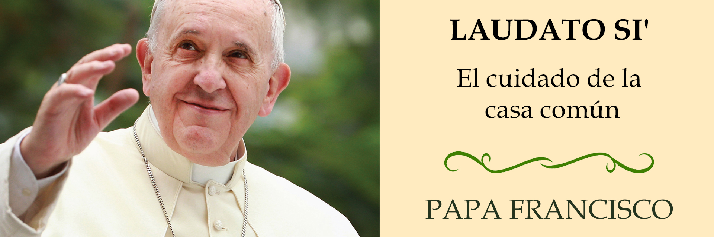
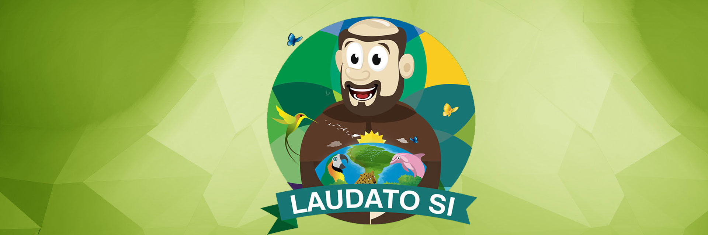
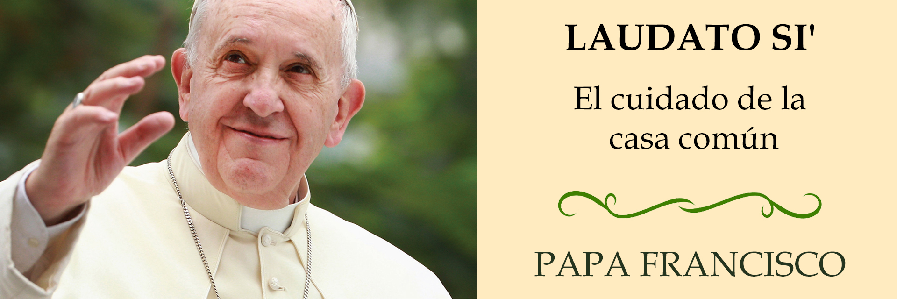
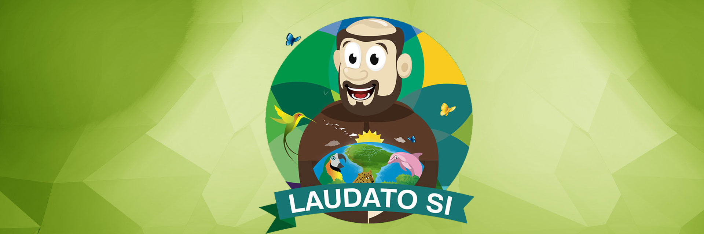

Laudato si’ es la segunda
encíclica del Papa Francisco y la primera dedicada
enteramente al tema de la ecología. Fue firmada el 24 de mayo de 2015
y publicada el 15 de junio de ese mismo año.
Se llama ‘Laudato si’, (‘Alabado seas’), porque comienza citando esas
palabras, con las que empieza el llamado ‘Cántico de las Criaturas’
que escribió san Francisco de Asís para alabar y agradecer a Dios por
la Creación.
Su tema es: ‘El cuidado de la casa común’, es decir, de la adecuada
conservación del planeta que todos habitamos y es un
documento no es sólo para los católicos, sino, en palabras del Santo
Padre, para “cada persona que habita este planeta”.
Empieza con una introducción, seguida de seis capítulos:
Capítulo 1: Lo que le está pasando a nuestra casa,
donde el Papa hace una dura crítica a la sociedad actual, donde
predomina la contaminación de aire, tierra, agua y la ‘cultura del
descarte’, que excluye personas y convierte a las cosas en basura.
Capítulo 2: Evangelio de la creación, donde el
Pontífice nos llama a establecer relaciones fraternas con todas las
criaturas, y a contemplar y preservar la belleza de la creación.
Capítulo 3: Raíz humana de la crisis ecológica, que
segura que el deterioro de la ecología va a la par al deterioro de la
sociedad, y propone valorar y respetar cada vida creada por Dios.
Capítulo 4: Una ecología integral, el cual asegura
que la ecología también significa procurar calidad de vida y la
preservación del patrimonio cultural, histórico y artístico. Este
capítulo invita a preguntarnos qué mundo dejamos a las siguientes
generaciones.
Capítulo 5:
Algunas línea de orientación y acción, donde el
Papa llama a la unidad de todos los sectores para resolver la crisis
ecológica. Dice que hay que redefinir el concepto de progreso, tomando
en cuenta el bienestar integral del ser humano.
Capítulo 6: Educación y espiritualidad ecológica. En
este último capítulo, el Santo Padre establece líneas de acción y
propuestas concretas para una conversión ecológica.
 


